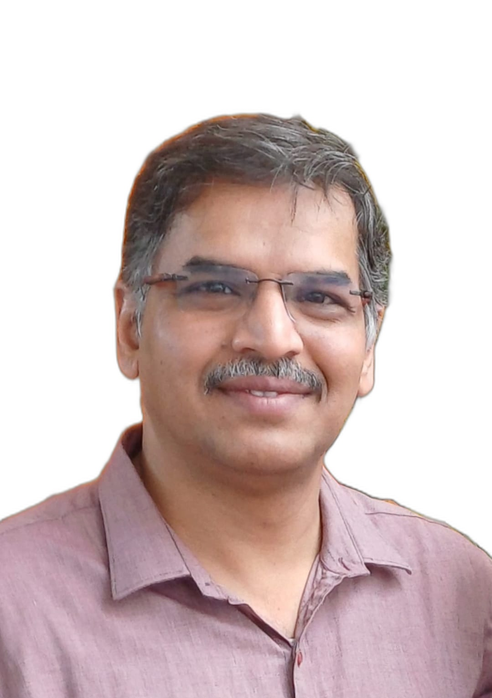

Founder
25+ years of taking embedded systems from concept to production.

Aravind V Bayari
Founder & CTO, toN0tErr / CleaErr Tech Solutions
25+ years of embedded systems expertise spanning 10+ companies, 20+ products, and 10+ industries. Currently serving as Hardware Lead at KuboCare (Antler-backed HealthTech startup, $1M seed), designing mmWave radar-based AI health monitoring systems for senior care.
From defence avionics (HAL LCA Tejas test benches) to viral food robots (Idli ATM), from precision strain measurement (SCAD 508, national award) to EV motor drives — a career built on engineering reliability into every system.
A Career in Precision
Explore Aravind's complete career timeline, all 20+ projects, technical skills, and detailed experience across 10+ companies and 10+ industries.
View Full Portfolio